# 2017-2020
hdl <- read_xpt("/Users/trishalal/Downloads/HDL_L.xpt")
smoking <- read_xpt("/Users/trishalal/Downloads/SMQ_L.xpt")
# 2021-2023
hdl2 <- read_xpt("/Users/trishalal/Downloads/P_HDL.xpt")
smoking2 <- read_xpt("/Users/trishalal/Downloads/P_SMQ.xpt")Blog
Welcome to the Blog
This blog contains a study report for Studies 1 and 2 for Project B. Given my interest in cancer, I mostly chose to include variables that are cancer relevant in my analysis.
Study 1
Analysis A: Does smoking influence HDL cholesterol levels?
The paired variables I chose to compare are HDL cholesterol (LBDHDD, measured in mg/dL) in smokers from the 2017-2020 NHANES dataset with those who stopped smoking in the 2021-2024 NHANES dataset.
The null hypothesis for this analysis is that there is no difference in mean HDL cholesterol levels between smokers (2017-2020) and non-smokers (2021-2023). The alternative hypothesis is that there is a difference in between HDL cholesterol levels between smokers (2017-2020) and non-smokers (2021-2023).
Existing research indicates that smoking tends to lower HDL cholesterol levels, which is often referred to as “good” cholesterol. Low HDL cholesterol levels have been associated with increased oxidative stress and inflammation, both of which drive carcinogenesis. By running this paired analysis, we can explore whether smoking is associated with significant changes in “good cholesterol” across these groups.
In order to run the analysis, I first extracted data from NHANES and merged it into one table that contains only the relevant variables.
smokers_old <- hdl %>%
inner_join(smoking, by = "SEQN") %>%
filter(SMQ020 == 1 & !is.na(LBDHDD)) %>%
select(SEQN, LBDHDD, SMQ020)
nonsmokers_new <- hdl2 %>%
inner_join(smoking2, by = "SEQN") %>%
filter(SMQ020 == 2 & !is.na(LBDHDD)) %>%
select(SEQN, LBDHDD, SMQ020)
summary(smokers_old) SEQN LBDHDD SMQ020
Min. :130378 Min. : 22.00 Min. :1
1st Qu.:133382 1st Qu.: 42.00 1st Qu.:1
Median :136473 Median : 51.00 Median :1
Mean :136402 Mean : 53.36 Mean :1
3rd Qu.:139386 3rd Qu.: 61.00 3rd Qu.:1
Max. :142310 Max. :138.00 Max. :1 summary(nonsmokers_new) SEQN LBDHDD SMQ020
Min. :109266 Min. : 5.00 Min. :2
1st Qu.:113201 1st Qu.: 43.00 1st Qu.:2
Median :116955 Median : 52.00 Median :2
Mean :117026 Mean : 54.04 Mean :2
3rd Qu.:120885 3rd Qu.: 62.00 3rd Qu.:2
Max. :124822 Max. :141.00 Max. :2 smokers_old <- smokers_old %>%
mutate(Group = "Smokers")
nonsmokers_new <- nonsmokers_new %>%
mutate(Group = "Nonsmokers")
combined <- bind_rows(smokers_old, nonsmokers_new)
print(combined)# A tibble: 7,200 × 4
SEQN LBDHDD SMQ020 Group
<dbl> <dbl> <dbl> <chr>
1 130378 45 1 Smokers
2 130379 60 1 Smokers
3 130386 46 1 Smokers
4 130391 41 1 Smokers
5 130396 68 1 Smokers
6 130406 37 1 Smokers
7 130407 81 1 Smokers
8 130408 82 1 Smokers
9 130415 43 1 Smokers
10 130437 37 1 Smokers
# ℹ 7,190 more rowsThese summary statistics reveal that the mean HDL cholesterol is slightly higher in non-smokers (54.04) compared to smokers (53.36). The median values for both groups (smokers: 51 mg/dL, non-smokers: 52 mg/dL) are slightly different as well.
In order to determine which method I wanted to use to build a confidence interval for the population mean difference, I decided to first assess normality by building a histogram and Q-Q plot of the differences between the two groups.
qqnorm(combined$LBDHDD, main = "QQ Plot: HDL Cholesterol Levels")
qqline(combined$LBDHDD, col = "coral", lwd = 2)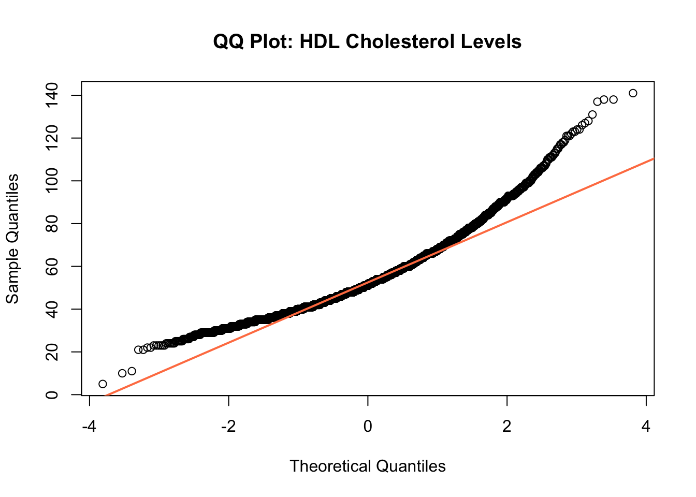
hist(combined$LBDHDD,
breaks = 30,
col = "coral",
main = "Histogram: HDL Cholesterol Levels",
xlab = "HDL Cholesterol (mg/dL)",
border = "darkred")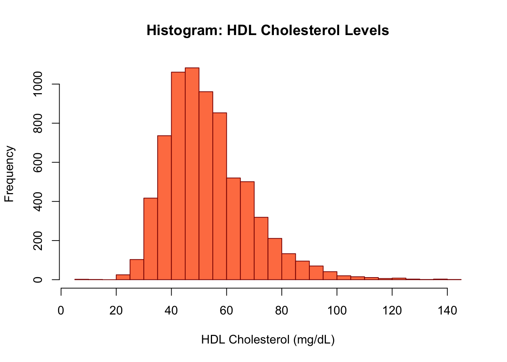
Because the data is right-skewed and not normally distributed, I chose to proceed with the bootstrap approach to estimate a confidence interval for the population mean difference between the two groups.
group_means <- combined %>%
group_by(Group) %>%
summarize(mean_HDL = mean(LBDHDD, na.rm = TRUE))
mean_difference <- group_means %>%
summarize(difference = diff(mean_HDL)) %>%
pull(difference)
print(mean_difference)[1] -0.6784084
Attaching package: 'Hmisc'The following objects are masked from 'package:dplyr':
src, summarizeThe following objects are masked from 'package:base':
format.pval, unitssmokers_HDL <- combined %>% filter(Group == "Smokers") %>% pull(LBDHDD)
nonsmokers_HDL <- combined %>% filter(Group == "Nonsmokers") %>% pull(LBDHDD)
set.seed(123)
bootstrap_ci <- smean.cl.boot(smokers_HDL - nonsmokers_HDL, B = 1000, conf.int = 0.90)Warning in smokers_HDL - nonsmokers_HDL: longer object length is not a multiple
of shorter object lengthprint(bootstrap_ci) Mean Lower Upper
-0.6705120 -1.1510828 -0.1463267 Based on this analysis, on average, HDL cholesterol levels in non-smokers (2021-2023) are 0.67 mg/dL higher than in smokers (2017-2020), with a 90% confidence interval for the mean difference of -1.15 to -0.15 mg/dL. Since the CI does not include 0, this difference is considered statistically signficant and we can reject the null hypothesis.
In conclusion, this analysis suggests that there is a difference in HDL cholesterol levels between smokers and non-smokers. However, given how small the difference is, it likely has limited clinical relevance. I imagine there are other clinical factors that may play a bigger role in carcinogenesis.
Analysis B: Is there a meaningful difference in total cholesterol levels in those with and without a family history of cancer?
The independent variables I chose to compare for this analysis are total cholesterol levels (LBXTC) between those with and without a family history of cancer (MCQ220). I completed this analysis using NHANES 2021-2023 data.
The null hypothesis is that there is no differene in mean total cholesterol levels between those with and without a family history of cancer. The alternative hypothesis is that there is a difference in mean total cholesterol levels between those with and without a family history of cancer. I suspect that those with a family history of cancer may have higher total cholesterol levels.
cholesterol <- read_xpt("/Users/trishalal/Downloads/TCHOL_L.xpt")
fhx <- read_xpt("/Users/trishalal/Downloads/MCQ_L.xpt")cholesterol <- cholesterol %>%
select(SEQN, LBXTC) %>%
filter(!is.na(LBXTC))
fhx <- fhx %>%
select(SEQN, MCQ220) %>%
filter(!is.na(MCQ220) & MCQ220 %in% c(1,2)) %>%
mutate(Family_History = case_when(
MCQ220 == 1 ~ "Yes",
MCQ220 == 2 ~ "No"
))
cholesterol_fhx <- cholesterol %>%
inner_join(fhx, by = "SEQN")
summary(cholesterol_fhx) SEQN LBXTC MCQ220 Family_History
Min. :130378 Min. : 62.0 Min. :1.000 Length:5492
1st Qu.:133348 1st Qu.:159.0 1st Qu.:2.000 Class :character
Median :136402 Median :185.0 Median :2.000 Mode :character
Mean :136355 Mean :188.1 Mean :1.852
3rd Qu.:139312 3rd Qu.:214.0 3rd Qu.:2.000
Max. :142310 Max. :438.0 Max. :2.000 library(ggplot2)
ggplot(cholesterol_fhx, aes(x = LBXTC, fill = Family_History)) +
geom_histogram(position = "identity", alpha = 0.6, bins = 30) +
labs(
title = "Histogram of Total Cholesterol by Family History of Cancer",
x = "Total Cholesterol (mg/dL)",
y = "Frequency"
) +
scale_fill_manual(values = c("coral", "lightgreen")) +
theme_minimal() +
theme(
panel.grid = element_blank()
)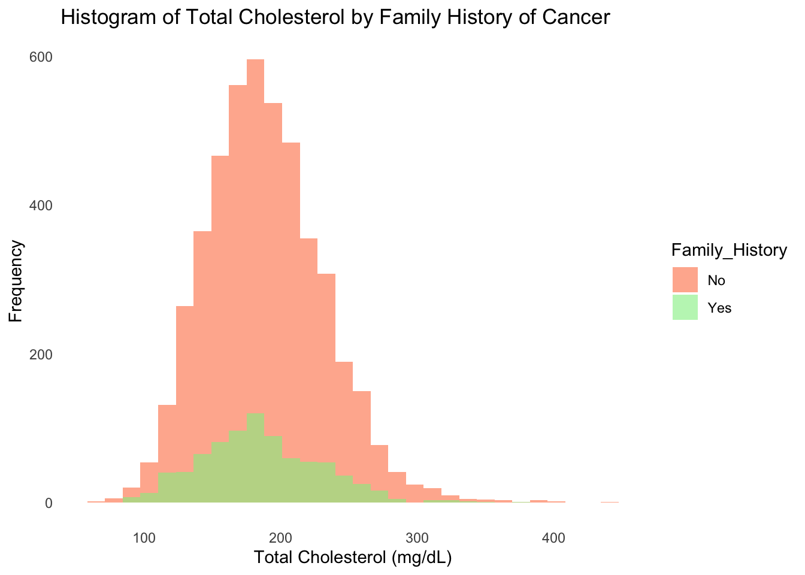
cholesterol_fhx %>%
ggplot(aes(sample = LBXTC, color = Family_History)) +
stat_qq() +
stat_qq_line() +
labs(
title = "Q-Q Plot of Total Cholesterol",
x = "Theoretical Quantiles",
y = "Sample Quantiles"
) +
theme_minimal()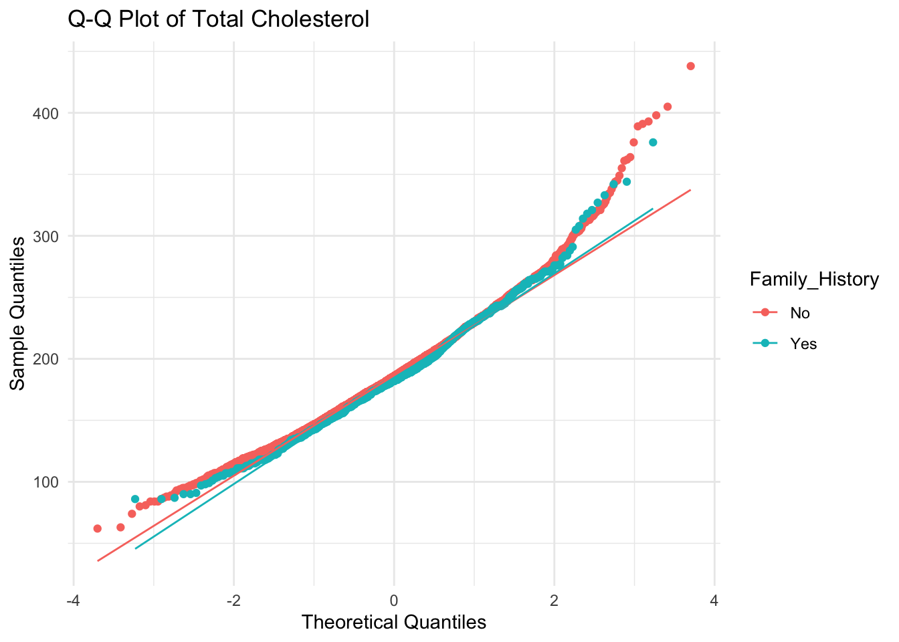
Based on the histogram and Q-Q plots, this data is not normally distributed. For that reason, I chose to proceed with a Mann-Whitney U test with the bootstrap procedure to determine if the distributions of the two independent groups differ.
Attaching package: 'kableExtra'The following object is masked from 'package:dplyr':
group_rowschol_yes <- cholesterol_fhx %>% filter(Family_History == "Yes") %>% pull(LBXTC)
chol_no <- cholesterol_fhx %>% filter(Family_History == "No") %>% pull(LBXTC)
wt <- wilcox.test(chol_yes, chol_no,
conf.int = TRUE,
conf.level = 0.90)
tidy_wt <- tidy(wt)
tidy_wt %>%
kbl(digits = 2) %>%
kable_styling()| estimate | statistic | p.value | conf.low | conf.high | method | alternative |
|---|---|---|---|---|---|---|
| -3 | 1822269 | 0.05 | -6 | -1 | Wilcoxon rank sum test with continuity correction | two.sided |
These results indicate that the median difference in cholesterol between the two groups is -3 mg/dL, such that individuals without a family history of cancer had total cholesterol levels 3 mg/dL higher than those with a family history of cancer. The 90% confidence interval for this median difference is between -6 and -1 mg/dL. It implies statistical significance as it does not include zero. Additionally, the p-value is 0.05, which lies right at the threshold of statistical significance.
ggplot(cholesterol_fhx, aes(x = Family_History, y = LBXTC, fill = Family_History)) +
geom_boxplot(alpha = 0.7) +
labs(
title = "Comparison of Total Cholesterol by Family History of Cancer",
x = "Family History of Cancer",
y = "Total Cholesterol (mg/dL)"
) +
scale_fill_manual(values = c("coral", "lightgreen")) +
theme_minimal() +
theme(
panel.grid = element_blank()
)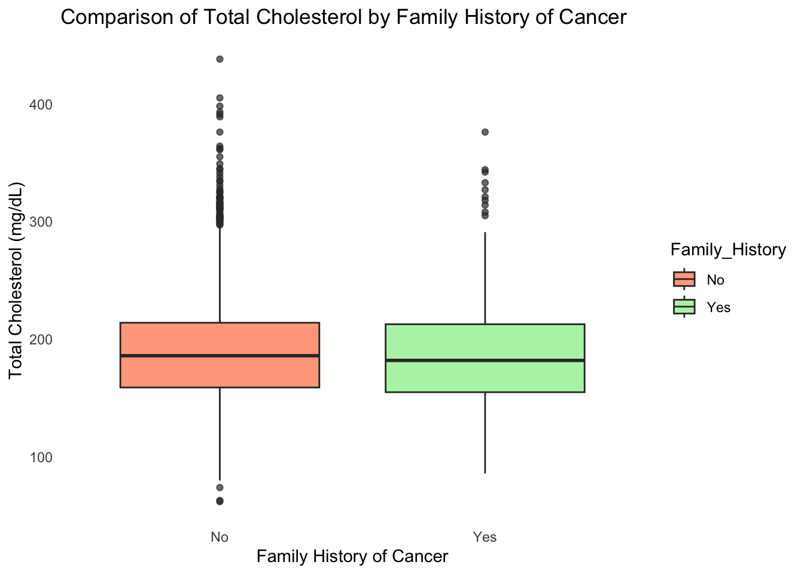
In conclusion, a median difference of 3 mg/dL is small. While it may be statistically significant, I doubt it is clinically significant.
Analysis C: Are there significant differences in total cholesterol levels across different racial/ethnic groups?
The variables I chose to compare in this analysis were total cholesterol (LBDHDD) as my outcome across various racial/ethnic groups (RIDRETH3). This data was obtained from the most recent release of NHANES (2021-2023).
I hypothesize that there will be significant differences in total cholesterol levels across racial/ethnic groups due to underlying factors, primarily related to genetic predisposition and social determinants of health.
race <- read_xpt("/Users/trishalal/Downloads/DEMO_L.xpt")race <- race %>%
select(SEQN, RIDRETH3) %>%
filter(!is.na(RIDRETH3))
cholesterol_race <- cholesterol_fhx %>%
inner_join(race, by = "SEQN") %>%
mutate(
Race_Ethnicity = case_when(
RIDRETH3 == 1 ~ "Mexican American",
RIDRETH3 == 2 ~ "Other Hispanic",
RIDRETH3 == 3 ~ "Non-Hispanic White",
RIDRETH3 == 4 ~ "Non-Hispanic Black",
RIDRETH3 == 6 ~ "Non-Hispanic Asian",
RIDRETH3 == 7 ~ "Other Race - Including Multi-Racial",
TRUE ~ NA_character_
)
) %>%
filter(!is.na(Race_Ethnicity))
summary(cholesterol_race) SEQN LBXTC MCQ220 Family_History
Min. :130378 Min. : 62.0 Min. :1.000 Length:5492
1st Qu.:133348 1st Qu.:159.0 1st Qu.:2.000 Class :character
Median :136402 Median :185.0 Median :2.000 Mode :character
Mean :136355 Mean :188.1 Mean :1.852
3rd Qu.:139312 3rd Qu.:214.0 3rd Qu.:2.000
Max. :142310 Max. :438.0 Max. :2.000
RIDRETH3 Race_Ethnicity
Min. :1.000 Length:5492
1st Qu.:3.000 Class :character
Median :3.000 Mode :character
Mean :3.289
3rd Qu.:3.000
Max. :7.000 In order to test for overall differences in mean cholesterol levels across race/ethnicity groups, I chose to run an ANOVA using Tukey’s HSD method.
cholesterol_race <- cholesterol_race %>%
mutate(Race_Ethnicity = factor(Race_Ethnicity)) %>%
mutate(Race_Ethnicity = droplevels(Race_Ethnicity))Analysis of Variance Table
Response: LBXTC
Df Sum Sq Mean Sq F value Pr(>F)
Race_Ethnicity 5 84220 16844.0 9.3068 7.707e-09 ***
Residuals 5486 9928951 1809.9
---
Signif. codes: 0 '***' 0.001 '**' 0.01 '*' 0.05 '.' 0.1 ' ' 1The ANOVA results demonstrate high variance in total cholesterol levels between races, as indicated by an F-value of 9.3. Given that p<0.001, these findings suggest that race/ethnicity influences variability in cholesterol levels.
The Tukey HSD allows us to determine specific pariwise differences between racial/ethnic groups.
anova_model <- aov(LBXTC ~ Race_Ethnicity, data = cholesterol_race)
tukey_results <- TukeyHSD(anova_model, conf.level = 0.90)
tidy_tukey <- tidy(tukey_results)
print(tidy_tukey)# A tibble: 15 × 7
term contrast null.value estimate conf.low conf.high adj.p.value
<chr> <chr> <dbl> <dbl> <dbl> <dbl> <dbl>
1 Race_Ethnicity Non-Hispan… 0 9.73 1.16 18.3 3.87e-2
2 Race_Ethnicity Non-Hispan… 0 -7.32 -14.5 -0.0962 9.17e-2
3 Race_Ethnicity Non-Hispan… 0 3.61 -2.44 9.67 6.35e-1
4 Race_Ethnicity Other Hisp… 0 2.23 -5.15 9.62 9.71e-1
5 Race_Ethnicity Other Race… 0 4.52 -3.78 12.8 7.21e-1
6 Race_Ethnicity Non-Hispan… 0 -17.0 -24.8 -9.32 1.73e-7
7 Race_Ethnicity Non-Hispan… 0 -6.12 -12.8 0.526 1.62e-1
8 Race_Ethnicity Other Hisp… 0 -7.50 -15.4 0.380 1.35e-1
9 Race_Ethnicity Other Race… 0 -5.21 -13.9 3.52 6.35e-1
10 Race_Ethnicity Non-Hispan… 0 10.9 6.15 15.7 5.32e-8
11 Race_Ethnicity Other Hisp… 0 9.55 3.16 15.9 1.53e-3
12 Race_Ethnicity Other Race… 0 11.8 4.42 19.3 5.21e-4
13 Race_Ethnicity Other Hisp… 0 -1.38 -6.41 3.65 9.81e-1
14 Race_Ethnicity Other Race… 0 0.905 -5.38 7.19 9.99e-1
15 Race_Ethnicity Other Race… 0 2.28 -5.29 9.86 9.71e-1mar.default <- c(5, 6, 4, 2) + 0.1
par(mar = mar.default + c(0, 12, 0, 0))
plot(
TukeyHSD(aov(LBXTC ~ Race_Ethnicity, data = cholesterol_race), conf.level = 0.90),
las = 2,
cex.axis = 0.7
)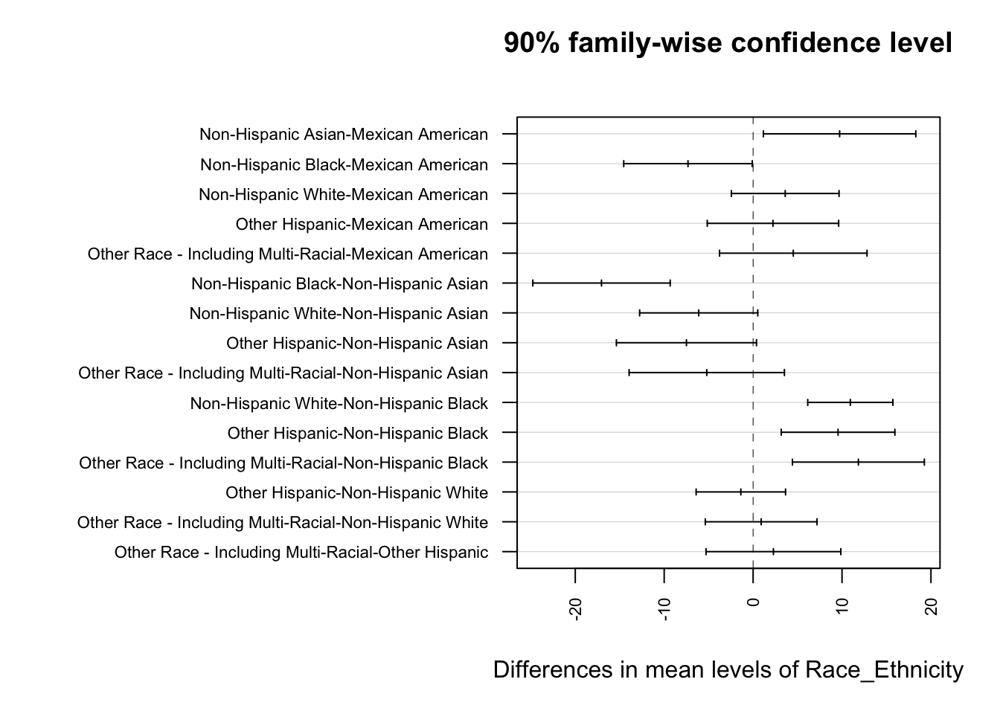
From this plot, we can see that there are significant differences in total cholesterol levels between certain racial/ethnic groups, as indicated by 90% CI that do not cross zero.
Higher cholesterol levels were observed in: 1. Non-Hispanic Asian compared to Mexican American individuals. 2. Non-Hispanic White compared to Non-Hispanic Black individuals. 3. Other Hispanic compared to Non-Hispanic Black and Other compared to Non-Hispanic Black individuals. Lower cholesterol levels were observed in: 5. Non-Hispanic Black compared to Mexican American individuals. 6. Non-Hispanic Black compared to Non-Hispanic Asian individuals.
These findings highlight disparities in total cholesterol between racial/ethnic groups. These likely represent a combination of factors, including genetics, dietary habits, socioeconomic factors, cultural practices, and other social determinants of health.
I think the parallels between groups with higher disparities in total cholesterol and those who experience higher cancer mortality rates for certain cancers based on existing literature are interesting. I strongly believe that underlying socioeconomic factors that impact healthcare access (including preventative care) have profound impacts on the overall health of minority groups.
Analysis D: What is the association between health insurance coverage and cancer diagnosis?
The variables I chose to compare in this analysis are health insurance coverage(HIQ210) and cancer diagnosis (MCQ220). I hypothesize that individuals without insurance coverage are less likely to report a diagnosis of cancer compared to those with insurance due to diaprities in access to healthcare, resulting in delays in diagnosis.
cancer <- read_xpt("/Users/trishalal/Downloads/MCQ_L.xpt")
ins <- read_xpt("/Users/trishalal/Downloads/HIQ_L.xpt")
cancer <- cancer %>%
select(SEQN, MCQ010) %>%
filter(!is.na(MCQ010)) %>%
mutate(Cancer_Diagnosis = case_when(
MCQ010 == 1 ~ "Yes",
MCQ010 == 2 ~ "No"
))
ins <- ins %>%
select(SEQN, HIQ011) %>%
filter(!is.na(HIQ011)) %>%
mutate(Insurance = case_when(
HIQ011 == 1 ~ "Yes",
HIQ011 == 2 ~ "No"
))
cancer_ins <- inner_join(cancer, ins, by = "SEQN")I wanted to make a 2x2 table to show the relationship between cancer diagnosis and insurance status.
table(cancer_ins$Cancer_Diagnosis, cancer_ins$Insurance)
No Yes
No 733 8998
Yes 126 1811In general, it appears that most who have a cancer diagnosis have health insurance. It also appears that most who do not have a cancer diagnosis also have insurance.
risk_insured <- 1811 / (1811 + 8998)
risk_uninsured <- 126 / (126 + 733)
RR <- risk_insured / risk_uninsured
print(RR)[1] 1.142235Individuals with insurance have a 14% greater relative risk of reporting a cancer diagnosis compared to uninsured individuals.
a <- 1811
b <- 126
c <- 8998
d <- 733
OR <- (a * d) / (b * c)
print(OR)[1] 1.170862The odds of being diagnosed with cancer are also 17% higher for insured individuals compared to uninsured individuals.
RD <- risk_insured - risk_uninsured
print(RD)[1] 0.02086338A risk difference of 0.02 indicates that there is a 2.0% higher risk of cancer diagnosis for insured individuals than uninsured individuals.
In conclusion, these findings suggest that insured individuals are slightly more likely to report a cancer diagnosis compared to uninsured individuals. This can likely be attributed to the role that insurance plays in facilitating access to diagnostic services and preventative care, which improve the early detection of cancer. These findings again highlight the importance of addressing disparities to care in cancer.
Study 2
The research question I will be assessing in Study 2 is: How effectively does race/ethnicity predict total cholesterol levels? What happens when we adjust for insurance status, smoking status, and family history of cancer?
The outcome variable is total cholesterol (mg/dL), and race/ethnicity is the key predictor. Other predictors for this outcome include insurance status, smoking status, and family history of cancer. All data was extracted from the most recent release of NHANES.
In order to begin the analysis, I first loaded and cleaned the data:
cholesterol <- read_xpt("/Users/trishalal/Downloads/TCHOL_L.xpt")
fhx <- read_xpt("/Users/trishalal/Downloads/MCQ_L.xpt")
race <- read_xpt("/Users/trishalal/Downloads/DEMO_L.xpt")
ins <- read_xpt("/Users/trishalal/Downloads/HIQ_L.xpt")
smoking <- read_xpt("/Users/trishalal/Downloads/SMQ_L.xpt")cholesterol <- cholesterol %>%
select(SEQN, LBXTC) %>%
filter(!is.na(LBXTC))
fhx <- fhx %>%
select(SEQN, MCQ220) %>%
mutate(Family_History = case_when(
MCQ220 == 1 ~ "Yes",
MCQ220 == 2 ~ "No"
)) %>%
select(-MCQ220)
race <- race %>%
select(SEQN, RIDRETH3) %>%
mutate(Race_Ethnicity = case_when(
RIDRETH3 == 1 ~ "Mexican American",
RIDRETH3 == 2 ~ "Other Hispanic",
RIDRETH3 == 3 ~ "Non-Hispanic White",
RIDRETH3 == 4 ~ "Non-Hispanic Black",
RIDRETH3 == 6 ~ "Non-Hispanic Asian",
RIDRETH3 == 7 ~ "Other Race/Multiracial"
)) %>%
select(-RIDRETH3) %>%
filter(!is.na(Race_Ethnicity))
ins <- ins %>%
select(SEQN, HIQ011) %>%
mutate(Insurance = case_when(
HIQ011 == 1 ~ "Yes",
HIQ011 == 2 ~ "No"
)) %>%
select(-HIQ011)
smoking <- smoking %>%
select(SEQN, SMQ020) %>%
mutate(Smoking_Status = case_when(
SMQ020 == 1 ~ "Yes",
SMQ020 == 2 ~ "No"
)) %>%
select(-SMQ020)
study2_data <- cholesterol %>%
inner_join(race, by = "SEQN") %>%
inner_join(ins, by = "SEQN") %>%
inner_join(smoking, by = "SEQN") %>%
inner_join(fhx, by = "SEQN")
print(study2_data)# A tibble: 6,391 × 6
SEQN LBXTC Race_Ethnicity Insurance Smoking_Status Family_History
<dbl> <dbl> <chr> <chr> <chr> <chr>
1 130378 264 Non-Hispanic Asian Yes Yes No
2 130379 214 Non-Hispanic White Yes Yes Yes
3 130380 187 Other Hispanic Yes No No
4 130386 183 Mexican American Yes Yes No
5 130387 203 Non-Hispanic White Yes No Yes
6 130390 159 Non-Hispanic White No No No
7 130391 157 Non-Hispanic White Yes Yes No
8 130392 191 Non-Hispanic White Yes No Yes
9 130393 179 Non-Hispanic White Yes No No
10 130394 183 Non-Hispanic White Yes No No
# ℹ 6,381 more rowssummary(study2_data) SEQN LBXTC Race_Ethnicity Insurance
Min. :130378 Min. : 62.0 Length:6391 Length:6391
1st Qu.:133321 1st Qu.:152.0 Class :character Class :character
Median :136376 Median :180.0 Mode :character Mode :character
Mean :136330 Mean :183.3
3rd Qu.:139291 3rd Qu.:209.0
Max. :142310 Max. :438.0
Smoking_Status Family_History
Length:6391 Length:6391
Class :character Class :character
Mode :character Mode :character
Next, I wanted to evaluate the missingness of this dataset.
library(naniar)
gg_miss_var(study2_data)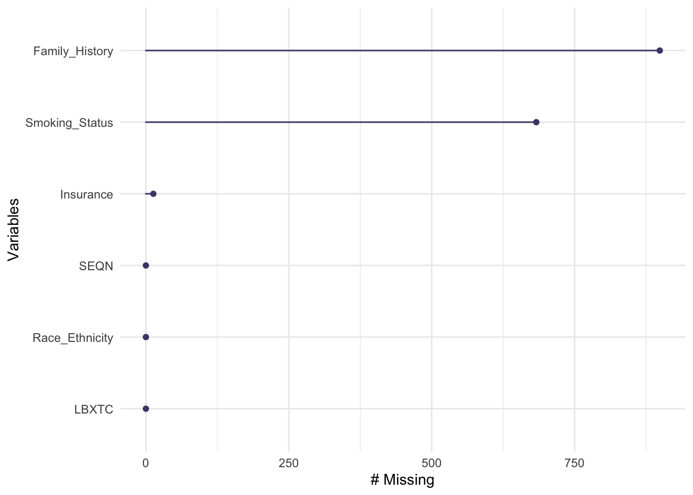
miss_var_summary(study2_data)# A tibble: 6 × 3
variable n_miss pct_miss
<chr> <int> <num>
1 Family_History 899 14.1
2 Smoking_Status 683 10.7
3 Insurance 13 0.203
4 SEQN 0 0
5 LBXTC 0 0
6 Race_Ethnicity 0 0 miss_case_table(study2_data)# A tibble: 4 × 3
n_miss_in_case n_cases pct_cases
<int> <int> <dbl>
1 0 5479 85.7
2 1 232 3.63
3 2 677 10.6
4 3 3 0.0469This tells us that there are 5479 complete cases, which makes up 85% of cases in total. 683 of the missing variables were data points related to family history of cancer, 683 were related to smoking status, and 13 were related to insurance.
I chose to manage the missing data by completing necessary imputations in variables other than the key predictor and outcome. Missing values were imputed using the mice package with the pmm method.
Attaching package: 'mice'The following object is masked from 'package:stats':
filterThe following objects are masked from 'package:base':
cbind, rbindimputation_data <- study2_data %>%
select(Family_History, Insurance, Smoking_Status)
imputation_data <- imputation_data %>%
mutate(
Family_History = as.factor(Family_History),
Insurance = as.factor(Insurance),
Smoking_Status = as.factor(Smoking_Status)
)
imputed_data <- mice(imputation_data, m = 1, method = "pmm", seed = 123)
iter imp variable
1 1 Family_History Insurance Smoking_Status
2 1 Family_History Insurance Smoking_Status
3 1 Family_History Insurance Smoking_Status
4 1 Family_History Insurance Smoking_Status
5 1 Family_History Insurance Smoking_Statusprint(imputed_data)Class: mids
Number of multiple imputations: 1
Imputation methods:
Family_History Insurance Smoking_Status
"pmm" "pmm" "pmm"
PredictorMatrix:
Family_History Insurance Smoking_Status
Family_History 0 1 1
Insurance 1 0 1
Smoking_Status 1 1 0imputed_complete <- complete(imputed_data)
gg_miss_var(imputed_complete)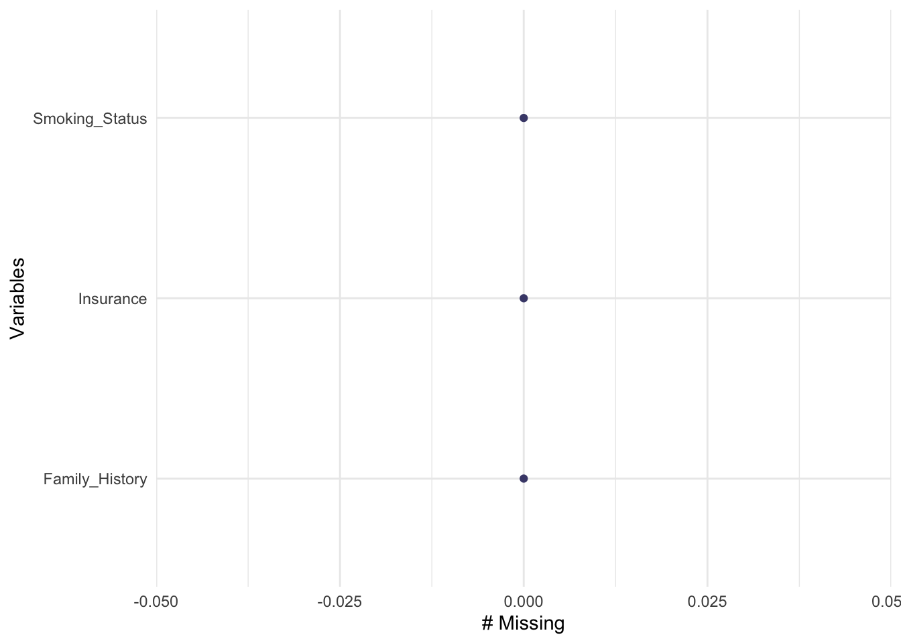
study2_data_imputed <- study2_data %>%
select(SEQN, LBXTC, Race_Ethnicity) %>%
bind_cols(imputed_complete)
gg_miss_var(study2_data_imputed)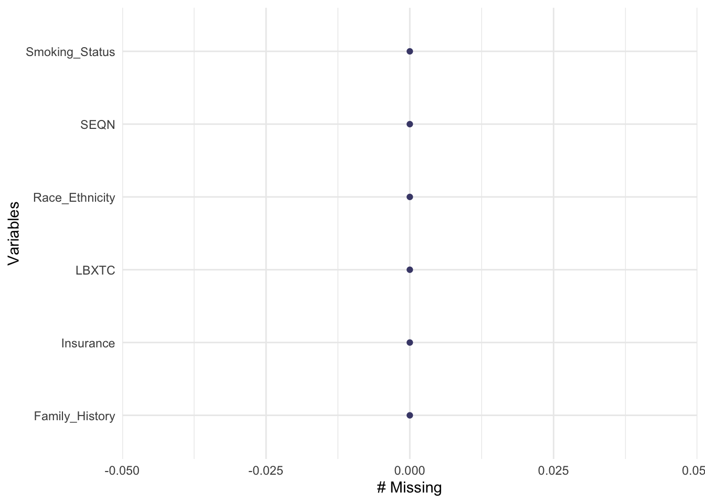
miss_var_summary(study2_data_imputed)# A tibble: 6 × 3
variable n_miss pct_miss
<chr> <int> <num>
1 SEQN 0 0
2 LBXTC 0 0
3 Race_Ethnicity 0 0
4 Family_History 0 0
5 Insurance 0 0
6 Smoking_Status 0 0prop_complete_case(study2_data_imputed)[1] 1miss_case_table(study2_data_imputed)# A tibble: 1 × 3
n_miss_in_case n_cases pct_cases
<int> <int> <dbl>
1 0 6391 100Now that the single imputation is complete for each predictor other than the key predictor, I confirmed that there are no longer any missing variables. The total number of cases in our clean dataset is ultimately 6391. This is a numerical summary of the data:
summary(study2_data_imputed) SEQN LBXTC Race_Ethnicity Family_History Insurance
Min. :130378 Min. : 62.0 Length:6391 No :5297 No : 508
1st Qu.:133321 1st Qu.:152.0 Class :character Yes:1094 Yes:5883
Median :136376 Median :180.0 Mode :character
Mean :136330 Mean :183.3
3rd Qu.:139291 3rd Qu.:209.0
Max. :142310 Max. :438.0
Smoking_Status
No :4025
Yes:2366
Next, I partitioned the clean data into a model development sample containing 75% of the data and a model testing sample containing the remaining 25%.
set.seed(123)
training_sample <- study2_data_imputed %>%
slice_sample(prop = 0.75)
test_sample <- anti_join(study2_data_imputed, training_sample, by = "SEQN")
nrow(training_sample)[1] 4793nrow(test_sample)[1] 1598nrow(study2_data_imputed)[1] 6391I wanted to visualize the outcome, total cholesterol, before investigating potential transformations for the purpose of fitting regression models.
library(patchwork)
p1 <- ggplot(training_sample, aes(x = LBXTC)) +
geom_histogram(binwidth = 10, fill = "coral", col = "darkred")
p2 <- ggplot(training_sample, aes(sample = LBXTC)) +
geom_qq(col = "coral") + geom_qq_line(col = "darkred")
p3 <- ggplot(training_sample, aes(x = "", y = LBXTC)) +
geom_violin(fill = "coral", alpha = 0.3) +
geom_boxplot(fill = "coral", width = 0.3,
outlier.color = "darkred") +
labs(x = "") + coord_flip()
p1 + p2 - p3 +
plot_layout(ncol = 1, height = c(3, 2)) +
plot_annotation(title = "Total Cholesterol (mg/dL)",
subtitle = paste0("Model Development Sample:",
nrow(training_sample),
"1598 cases"))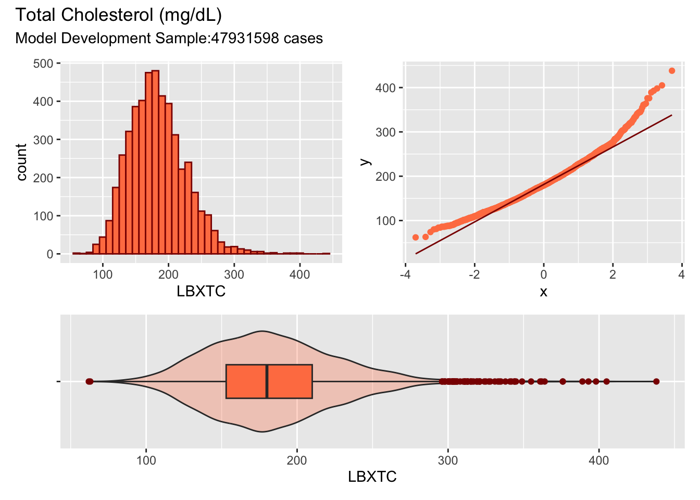
Based on this visualizaiton, I realized our data is right-skewed. Potential transformations that could be suitable are logarithmic or Box-Cox.
study2_data_log <- training_sample %>%
mutate(log_LBXTC = log(LBXTC))
ggplot(study2_data_log, aes(x = log_LBXTC)) +
geom_histogram(binwidth = 0.1, fill = "coral", col = "darkred") +
labs(title = "Log Transformation of Total Cholesterol",
x = "Log(Cholesterol)",
y = "Frequency")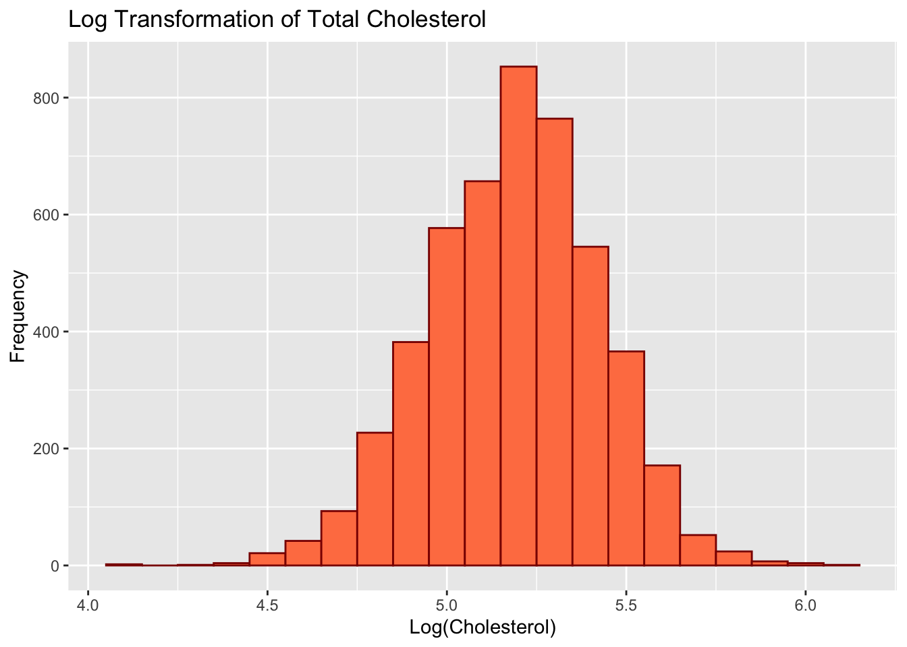
Loading required package: carData
Attaching package: 'car'The following object is masked from 'package:dplyr':
recode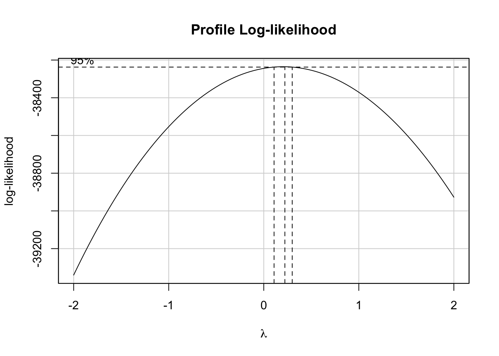
summary(powerTransform(mod_0))bcPower Transformation to Normality
Est Power Rounded Pwr Wald Lwr Bnd Wald Upr Bnd
Y1 0.2036 0.2 0.109 0.2982
Likelihood ratio test that transformation parameter is equal to 0
(log transformation)
LRT df pval
LR test, lambda = (0) 17.83628 1 2.4075e-05
Likelihood ratio test that no transformation is needed
LRT df pval
LR test, lambda = (1) 270.9899 1 < 2.22e-16After evaluating these two separate transformations, I chose to proceed with the logarithmic transformation of our cholesterol data because the resulting histogram nearly follows a normal distribution compared to the original data. I think this is also sufficient since the lamda from the Box-Cox transformation is nearly zero.
This is the summary of the full model with all predictors:
full_model <- lm(log(LBXTC) ~ Race_Ethnicity + Family_History + Smoking_Status + Insurance, data = training_sample)
summary(full_model)
Call:
lm(formula = log(LBXTC) ~ Race_Ethnicity + Family_History + Smoking_Status +
Insurance, data = training_sample)
Residuals:
Min 1Q Median 3Q Max
-1.04479 -0.15488 0.00731 0.15400 0.84227
Coefficients:
Estimate Std. Error t value Pr(>|t|)
(Intercept) 5.178244 0.015666 330.536 < 2e-16 ***
Race_EthnicityNon-Hispanic Asian 0.085789 0.018965 4.523 6.23e-06 ***
Race_EthnicityNon-Hispanic Black -0.016624 0.015763 -1.055 0.29165
Race_EthnicityNon-Hispanic White 0.061709 0.013288 4.644 3.51e-06 ***
Race_EthnicityOther Hispanic 0.015451 0.015853 0.975 0.32978
Race_EthnicityOther Race/Multiracial 0.036320 0.018081 2.009 0.04461 *
Family_HistoryYes -0.046020 0.009109 -5.052 4.53e-07 ***
Smoking_StatusYes 0.012718 0.007105 1.790 0.07353 .
InsuranceYes -0.034487 0.012832 -2.688 0.00722 **
---
Signif. codes: 0 '***' 0.001 '**' 0.01 '*' 0.05 '.' 0.1 ' ' 1
Residual standard error: 0.2336 on 4784 degrees of freedom
Multiple R-squared: 0.02169, Adjusted R-squared: 0.02005
F-statistic: 13.26 on 8 and 4784 DF, p-value: < 2.2e-16This is a summary of the subset model, which includes only the key predictor (race/ethnicity):
Call:
lm(formula = log(LBXTC) ~ Race_Ethnicity, data = training_sample)
Residuals:
Min 1Q Median 3Q Max
-1.03795 -0.15262 0.00701 0.15411 0.87974
Coefficients:
Estimate Std. Error t value Pr(>|t|)
(Intercept) 5.14958 0.01219 422.454 < 2e-16 ***
Race_EthnicityNon-Hispanic Asian 0.08008 0.01887 4.244 2.24e-05 ***
Race_EthnicityNon-Hispanic Black -0.01978 0.01566 -1.263 0.2068
Race_EthnicityNon-Hispanic White 0.05290 0.01299 4.073 4.71e-05 ***
Race_EthnicityOther Hispanic 0.01551 0.01590 0.975 0.3294
Race_EthnicityOther Race/Multiracial 0.03037 0.01787 1.700 0.0892 .
---
Signif. codes: 0 '***' 0.001 '**' 0.01 '*' 0.05 '.' 0.1 ' ' 1
Residual standard error: 0.2345 on 4787 degrees of freedom
Multiple R-squared: 0.01414, Adjusted R-squared: 0.01312
F-statistic: 13.74 on 5 and 4787 DF, p-value: 2.407e-13This is a comparison of the two models:
library(knitr)
library(equatiomatic)
tidy_full <- tidy(full_model, conf.int = TRUE, conf.level = 0.90)
tidy_full %>%
select(term, estimate, std.error, p.value,
conf.low, conf.high) %>%
knitr::kable(digits = 4)| term | estimate | std.error | p.value | conf.low | conf.high |
|---|---|---|---|---|---|
| (Intercept) | 5.1782 | 0.0157 | 0.0000 | 5.1525 | 5.2040 |
| Race_EthnicityNon-Hispanic Asian | 0.0858 | 0.0190 | 0.0000 | 0.0546 | 0.1170 |
| Race_EthnicityNon-Hispanic Black | -0.0166 | 0.0158 | 0.2916 | -0.0426 | 0.0093 |
| Race_EthnicityNon-Hispanic White | 0.0617 | 0.0133 | 0.0000 | 0.0398 | 0.0836 |
| Race_EthnicityOther Hispanic | 0.0155 | 0.0159 | 0.3298 | -0.0106 | 0.0415 |
| Race_EthnicityOther Race/Multiracial | 0.0363 | 0.0181 | 0.0446 | 0.0066 | 0.0661 |
| Family_HistoryYes | -0.0460 | 0.0091 | 0.0000 | -0.0610 | -0.0310 |
| Smoking_StatusYes | 0.0127 | 0.0071 | 0.0735 | 0.0010 | 0.0244 |
| InsuranceYes | -0.0345 | 0.0128 | 0.0072 | -0.0556 | -0.0134 |
extract_eq(full_model, use_coefs = TRUE, coef_digits = 4,
ital_vars = TRUE)\[ \widehat{log(LBXTC)} = 5.1782 + 0.0858(Race\_Ethnicity_{Non-Hispanic\ Asian}) - 0.0166(Race\_Ethnicity_{Non-Hispanic\ Black}) + 0.0617(Race\_Ethnicity_{Non-Hispanic\ White}) + 0.0155(Race\_Ethnicity_{Other\ Hispanic}) + 0.0363(Race\_Ethnicity_{Other\ Race/Multiracial}) - 0.046(Family\_History_{Yes}) + 0.0127(Smoking\_Status_{Yes}) - 0.0345(Insurance_{Yes}) \]
glance(full_model) %>%
mutate(name = "full model") %>%
select(name, r.squared, adj.r.squared,
sigma, AIC, BIC) %>%
knitr::kable(digits = c(0, 3, 3, 3, 0, 0))| name | r.squared | adj.r.squared | sigma | AIC | BIC |
|---|---|---|---|---|---|
| full model | 0.022 | 0.02 | 0.234 | -325 | -260 |
tidy_subset <- tidy(subset_model, conf.int = TRUE, conf.level = 0.90)
tidy_subset %>%
select(term, estimate, std.error, p.value,
conf.low, conf.high) %>%
knitr::kable(digits = 4)| term | estimate | std.error | p.value | conf.low | conf.high |
|---|---|---|---|---|---|
| (Intercept) | 5.1496 | 0.0122 | 0.0000 | 5.1295 | 5.1696 |
| Race_EthnicityNon-Hispanic Asian | 0.0801 | 0.0189 | 0.0000 | 0.0490 | 0.1111 |
| Race_EthnicityNon-Hispanic Black | -0.0198 | 0.0157 | 0.2068 | -0.0455 | 0.0060 |
| Race_EthnicityNon-Hispanic White | 0.0529 | 0.0130 | 0.0000 | 0.0315 | 0.0743 |
| Race_EthnicityOther Hispanic | 0.0155 | 0.0159 | 0.3294 | -0.0106 | 0.0417 |
| Race_EthnicityOther Race/Multiracial | 0.0304 | 0.0179 | 0.0892 | 0.0010 | 0.0598 |
extract_eq(subset_model, use_coefs = TRUE, coef_digits = 4,
ital_vars = TRUE)\[ \widehat{log(LBXTC)} = 5.1496 + 0.0801(Race\_Ethnicity_{Non-Hispanic\ Asian}) - 0.0198(Race\_Ethnicity_{Non-Hispanic\ Black}) + 0.0529(Race\_Ethnicity_{Non-Hispanic\ White}) + 0.0155(Race\_Ethnicity_{Other\ Hispanic}) + 0.0304(Race\_Ethnicity_{Other\ Race/Multiracial}) \]
glance(subset_model) %>%
mutate(name = "subset model") %>%
select(name, r.squared, adj.r.squared,
sigma, AIC, BIC) %>%
knitr::kable(digits = c(0, 3, 3, 3, 0, 0))| name | r.squared | adj.r.squared | sigma | AIC | BIC |
|---|---|---|---|---|---|
| subset model | 0.014 | 0.013 | 0.234 | -294 | -248 |
In-sample assesment: Based on these model summaries, the full model (R-squared = 0.22) explains slightly more variablity in the outcome compared to the subset (R-squared = 0.013). The full model also has better AIC and BIC scores, indicating that it is a better fit for our model development sample compared to the subset model.
Holdout-sample assessment: In order to assess the predictive quality of the models, I ran some tests in the training (holdout) sample.
First, I calculated the RMSE (Root Mean Square Deviation) and MAE (Mean Absolute Error) of both models.
library(Metrics)
rmse_full <- rmse(holdout_sample$LBXTC, holdout_sample$pred_full)
mae_full <- mae(holdout_sample$LBXTC, holdout_sample$pred_full)
rmse_subset <- rmse(holdout_sample$LBXTC, holdout_sample$pred_subset)
mae_subset <- mae(holdout_sample$LBXTC, holdout_sample$pred_subset)
cat("Full Model - RMSE:", rmse_full, "MAE:", mae_full, "\n")Full Model - RMSE: 181.7983 MAE: 177.1574 cat("Subset Model - RMSE:", rmse_subset, "MAE:", mae_subset, "\n")Subset Model - RMSE: 181.7981 MAE: 177.1567 Both models have nearly identical RMSE and MAE. These values suggest that the models have poor predictive performance in terms of detecting precise outcomes. Interestingly, however, the subset model achieves the ssame predictive performance despite including only the key predictor.
Next, I created residuals and calibration plots:
library(ggplot2)
ggplot(holdout_sample, aes(x = pred_full, y = LBXTC - pred_full)) +
geom_point() +
geom_hline(yintercept = 0, linetype = "dashed", color = "darkred") +
labs(title = "Residuals vs Fitted (Full Model)", x = "Predicted", y = "Residuals")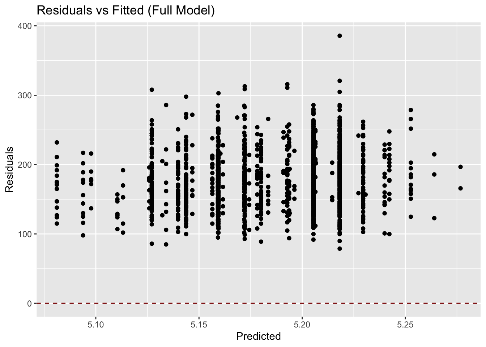
ggplot(holdout_sample, aes(x = pred_full, y = LBXTC)) +
geom_point(alpha = 0.5) +
geom_abline(slope = 1, intercept = 0, linetype = "dashed", color = "darkred") +
labs(title = "Calibration Plot (Full Model)", x = "Predicted", y = "Observed")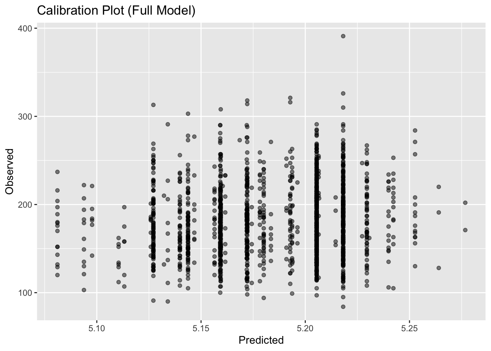
The residuals plot showed uneven distribution of the residuals, indicating that there is evidence of heteroscedasticity in both models. The calibration plot showed that predicted values are close to observed values. However, clustering suggests that our models have limited predictive power.
The bottom line is that both models have nearly identical predictive performance and quality. Given that information, I prefer the subset model because it is simpler, yet still has similar performance metrics as the full model. Despite the AIC and BIC being slightly better in the full model, I believe that prioritizing parsimony would ensure that our model is not overly complex for minimal additional benefit when it comes to practical applications.
As a reminder, the research question we tried to answer is: How effectively does race/ethnicity predict total cholesterol levels? What happens when we adjust for insurance status, smoking status, and family history of cancer?
Based on both models, race/ethnicity do contribute to differences in total cholesterol levels. For example, when evaluating the log-transformed subset model, certain groups have higher predicted total cholesterol levels, such as Non-Hispanic Asians and non-Hispanic White, compared to the reference group (Mexican-Americans). The effect size of these is small, however.
When we adjust for other predictors like insurance status, smoking status, and family history, the predictive power of the model improves only slightly, as discussed previously.
There are several limitations to be discussed. Firstly, the data obtained from NHANES may not represent the general population. Certain groups may be over- or undersampled, which is important to note when looking at race/ethnicity in particular. Additionally, both models have low R-squared values, which means that only a small proportion of the variance in cholesterol levels can be explained by the predictors we are evaluating in this study. Finally, there are unmeasured variables that could have confounded the observed relationship between the predictors and total cholesterol levels. These include dietary habits, physical activity, and genetics.
Next steps involve adding these other known risk factors to create a more robust analysis. It could also be more helpful to use a larger, more diverse dataset to improve the external validity of this study.
Reflection
Building this blog and dashboard was not an easy feat! It felt overwhelming at points, especially in trying to create a cohesive narrative. It was laborious but rewarding. I learned how to run a variety of statistical tests and create useful visualizations that I can apply to my personal research interests separately. I especially valued the opportunity to learn how to manage missingness, which will be helpful when using large datasets.